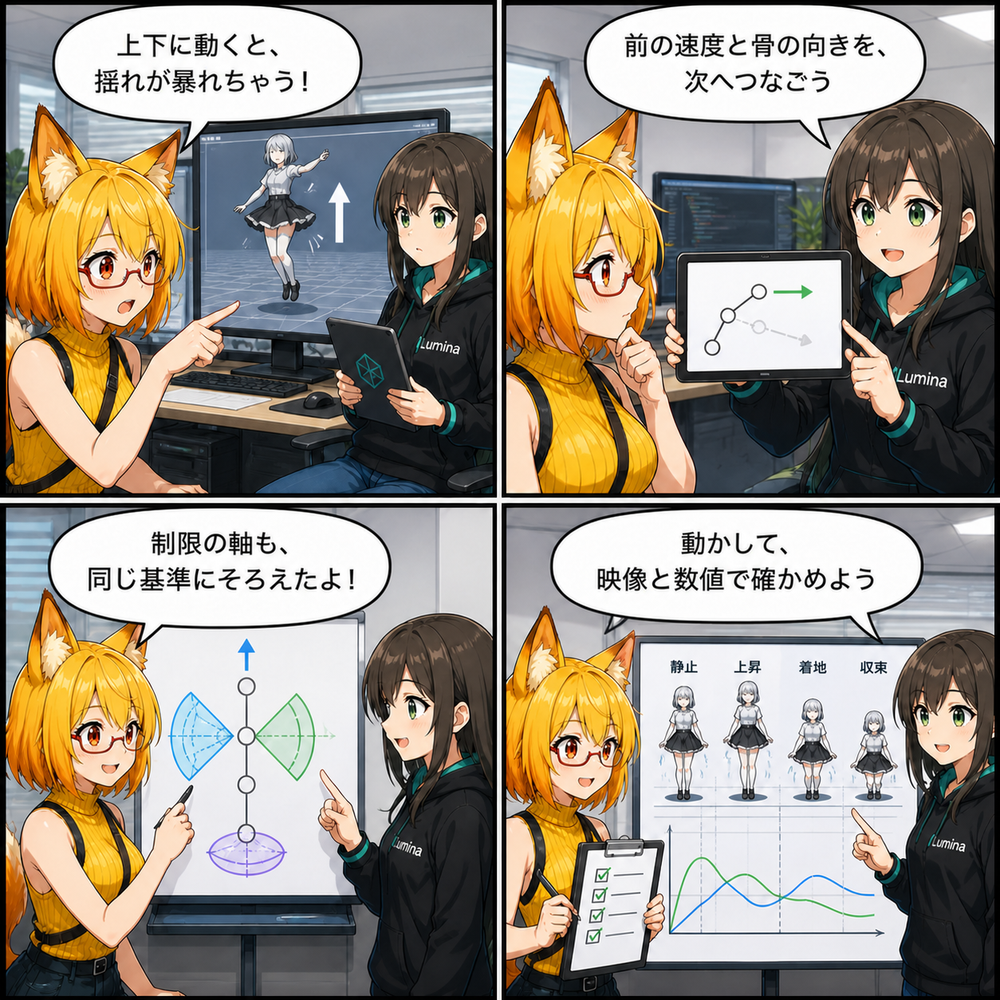

揺れの暴走を、数字と映像で追った日
2026-08-08 の開発日記では、アバターが上下に動いたときのスカートなどの揺れ物を、もっと安定して再現するための検証を取り上げます。見た目だけで判断せず、粒子の動きを数値へ落とし込み、同じ場面を連続画像でも比べられるようにした一日です。

集計終了時点の最終HEADは c4bdd53（「Material変換の共通化とTexture重複排除を実装」）で、対象コミットは 0件 でした。確認時点の作業ツリーには未コミット差分があり、期間内の更新時刻とコード内容を確認できた変更のうち、今回はPhysBoneの挙動検証を主題にしています。追跡済み差分は8ファイル、1,026行追加、145行削除でした。
今日の主題：揺れの原因を、再現できる形にする
揺れ物の不具合は、静止画だけでは原因を切り分けにくいものです。アバターの移動、慣性、骨の向き、角度制限、コライダーが同じ瞬間に影響し、少し条件が違うだけで見え方も変わります。
そこで、一定の加速度で上昇し、減速し、下降して着地する動きを決められたフレーム数で再現し、その間の粒子位置を記録する検証コードが追加されています。休止状態、上昇中、頂点、下降中、着地、落ち着くまでを画像として残すため、後から同じ条件を見比べられます。
前のフレームを覚えて、次の揺れへつなぐ
PhysBoneの粒子には、前フレームの速度と、親から子へ向かう骨ベクトルを保持する状態が加わっています。移動による慣性を計算するとき、直前の動きを引き継げるようにするための土台です。
位置を一度直して終わりではなく、制約や衝突を解いた後の状態も次のステップへ渡します。上下移動のように加速方向が切り替わる場面では、この連続性が不自然な跳ね返りを調べる重要な手掛かりになります。
角度制限の「軸」をSDKの考え方へ合わせる
揺れ物には、自由に曲がれる範囲を決めるAngle、Hinge、Polarなどの制限があります。今回の差分では、現在の回転量を単純にEuler角で切る方法から、元の子ボーン方向へ制限回転を合成して基準軸を作る方法へ計算が組み替えられています。
さらに、非等方スケールを考慮してローカル方向とワールド方向を変換し、それぞれの制限形式に合わせて円すい、ヒンジ面、Pitch・Yawの範囲へ方向を収めます。動いている最中に制限へ当たったとき、余計なエネルギーを生みにくくする狙いをコードから確認できます。
数値と連続画像を同じテストで残す
上下移動の検証では、フレーム番号、移動フェーズ、アバターの高さ・速度・加速度に加え、休止姿勢からの最大・平均偏差、上下方向の変位をTSVへ書き出します。同時に下半身を正面と斜めから撮影し、数値の変化と実際のスカートの形を対応させます。
コライダーの有無や制限計算の比較も切り替えられるため、「衝突が原因か」「角度制限が原因か」「慣性の持ち越しが原因か」を同じ動作で調べるための足場になっています。
ほかにも進んだこと
同じ作業ツリーでは、指のポーズをアバターの基準姿勢へ合わせて比較する回帰テストや、材質の透明状態を追跡する検証、VAB材質状態の追加テストも確認できました。ただし、これらは未コミットであり、一部には集計終了後の更新も含まれるため、今日の主題には混ぜていません。
4コマの裏話
4コマでは、上下移動でスカートが大きく揺れる場面から始めます。ルミナが前フレームの速度と骨方向を追う考え方を示し、ろひが制限軸を同じ基準へ整理。最後は感覚だけでなく、連続画像と数値の両方で確かめる流れです。
今日のまとめ
2026-08-08の記事対象期間では、新しいコミットはありませんでした。その一方でローカル作業ツリーでは、PhysBoneの時間方向の状態保持、制限軸の計算、上下移動を再現する視覚・数値回帰テストが進んでいました。
揺れ物の調整は「なんとなく自然」に見えるだけでは終われません。同じ動きを再現し、どの瞬間にどれだけずれたかを残せるようにすることで、修正の効果も副作用も追いやすくなります。
本日のひとこと
揺れは感覚で眺めず、時間ごと測る。